C++ IOCP 서버 프레임 워크
깃허브 링크: https://github.com/starkshn/cpp_iocp_server_study_rep
(2025.04.03 기준으로 현재 진행중인 프로젝트입니다)
공부 내용 정리 사이트 : C++ IOCP Game Server 공부 정리
프로젝트 소개
IOCP서버를 C++로 제작하고 있는 프로젝트입니다.
멀티쓰레드 환경을 고려한 여러 종류의 락개념과 구현을 해보고 객체의 생성 및 소멸에 관여하는 여러 커스텀 할당기를 제작하여 구현한 프로젝트입니다.
개발환경
- C++11
- python
- winsock2.lib
- Visual Studio 2022
구현기능
- Thread Manager
- Reader/Writer Lock
- DeadLock Profiler
- 커스텀 메모리 Allocator
- 메모리 풀링 & 오브젝트 풀링
- SocketUtils(소켓 기능지원, 추가예정)
- IOCP Core 클래스 제작(추가예정)
- Session 클래스 제작(추가예정)
클래스 다이어 그램
IOCP서버 프레임워크에 들어가는 클래스들의 계층관계와 포함관계를 표현하였습니다.
>

https://gitmind.com/app/docs/fz6huyj2 ← 링크를 통해 고화질로도 보실 수 있습니다.
시퀀스 다이어 그램
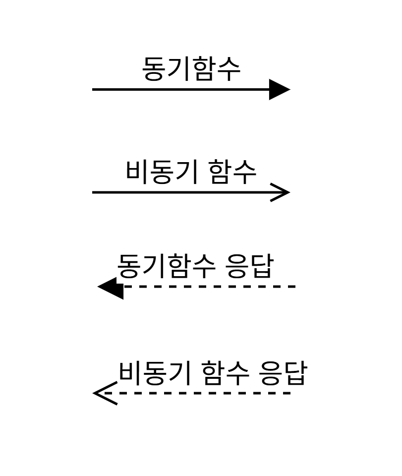
각 간선에 동기함수, 비동기 함수 호출을 구분하고
응답에 대한 간선도 동기함수 응답과 비동기 함수응답으로
구분하여 시퀀스 다이어 그램을 표현하였습니다.
IOCP기반 에코 서버 동작 방식에 대한 시퀀스 다이어 그램
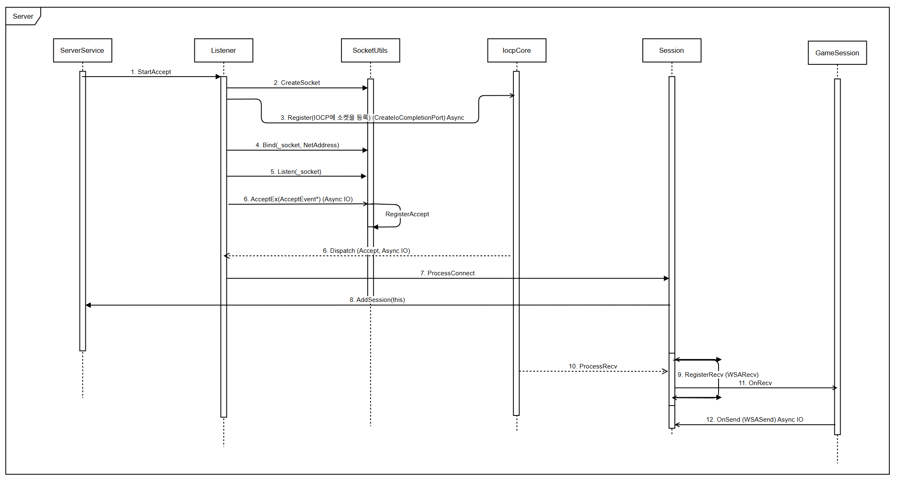
소켓 생성 → Bind(만든 소켓을 IP/Port에 바인딩) → CreateCompletionPort에 해당 소켓을 관찰 대상으로 등록 → Listen → Accept → ProcessConnect → Accept(RegisterRecv → ProcessRecv → Register)의 반복과정을 시퀀스 다이어그램으로 표현하였습니다.
IOCP서버 기반 클라이언트 동작 과정 시퀀스 다이어 그램
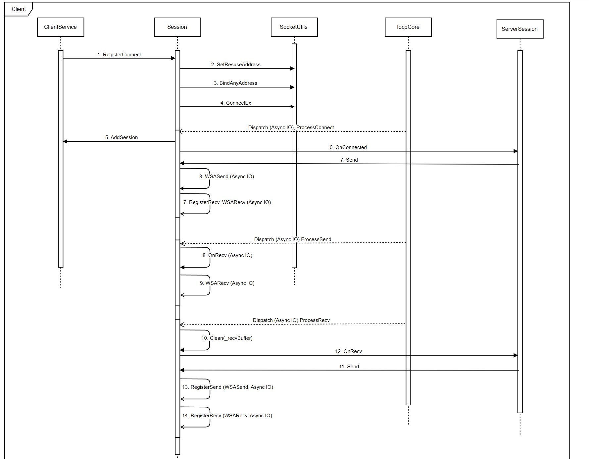
클라이언트쪽 ClientService는 ConnectEx(비동기 함수 호출) → 응답을 받고 OnConnected 호출 → Send → Recv → Send 구조가 반복되는 구조를 시퀀스 다이어 그램으로 표현하였습니다.
구현기능
Thread Manager
Thread Local Storage(TLS)와 Atomic 등을 사용하여 각 쓰레드마다 ID를 부여하고 식별할 수 있도록 하고 쓰레드들을 관리할 수 있도록 구현한 클래스입니다.
>
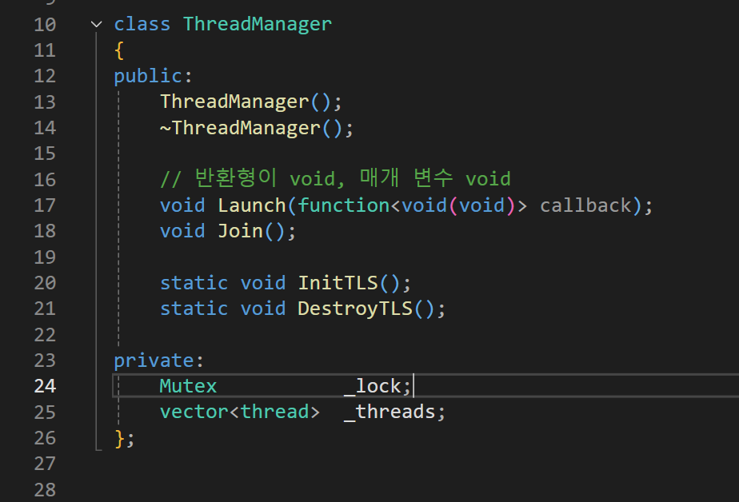
ThreadManager헤더 클래스입니다. 메인쓰레드가 사용할 Launch, Join함수를 구현해두었습니다.
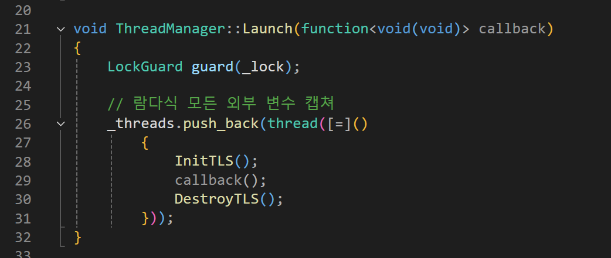
Launch함수는 functional 헤더를 통해 함수를 매개 변수로 받아 해당 함수를 수행하는 식으로 동작할 수 있도록 구현하였습니다.
한번에 하나의 쓰레드만 호출할 수 있도록
using LockGuard = std::lock_guardstd::mutex;의 타입의 재정의한 LockGuard를 사용하였습니다.
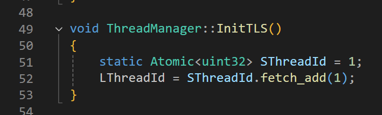
SThreadId에 static 키워드를 붙여 전역 변수로 Id를 할당하였습니다.
Atomic의 경우 ‘using Atomic = std::atomic
TLS에서 사용하는 변수의 경우 Naming Convention을 ‘L’을 붙여 사용하였습니다.
이렇게 구현한 이유
- Launch 함수
_thread(std::vector 타입)이라는 공유자원에 접근하고 있습니다. 제가 알기로 STL 컨테이너들은 멀티 쓰레드 환경에서 안전하지 않다고 알고있습니다.(std::vector의 경우 동적할당을 하는 중간에 다른 쓰레드가 끼어들어 다시 동적할당을 하거나 데이터를 추가하는 경우) 이러한 이유로 LockGuard를 통해 한번에 하나의 쓰레드만 접근할 수 있도록 하였습니다.
- InitTLS 함수
현재 LockGuard를 통해 한번에 하나의 쓰레드의 접근만을 허용하고 있지만 외부에서 다른 쓰레드가 InitTLS를 호출할 수도 있다는 경우의 수가 있어 atomic을 통해 쓰레드 ID를 증가시키고 할당하도록 구현하였습니다.
사용예시
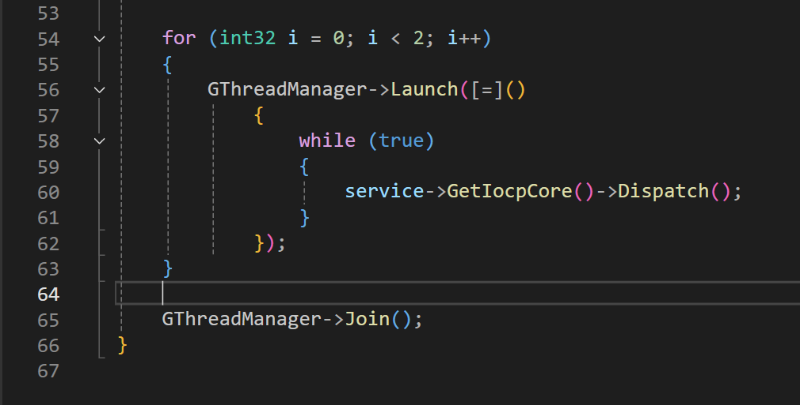
실제 사용예시입니다. ThreadManager의 Launch함수의 매개 변수로 람다함수를 넣어 2개의 쓰레드가 while문을 돌면서 각자의 일을 수행할 수 있도록 하는 코드입니다.
Reader/Writer Lock
어떤 공유자원에 대해 데이터를 쓰는 상황보다 해당 데이터를 읽는 상황이 많을 것이라 생각을 하였습니다.
mutex를 사용하여 완전한 상호배타적 락을 사용하여 다수의 쓰레드가 읽기만 하는 상황에서 병렬 수행 불가능, 병목현상 발생 가능성으로 인해 Reader/Writer Lock을 구현하게 되었습니다.
또한 잠시 대기하는 상황을 고려하고 컨텍스트 스위칭 비용을 줄이기 위하여 스핀락을 적용하였습니다.
Reader/Writer Lock의 정책은 WriterLock을 획득한 상황에서는 다시 WriterLock을 획득이 가능하고 WriterLock을 획득한 상황에서 ReaderLock또한 획득할 수 있게 하였지만 ReaderLock을 획득한 상황에서는 WriterLock을 획득할 수 없도록 정책을 설정하였습니다.
>
Code
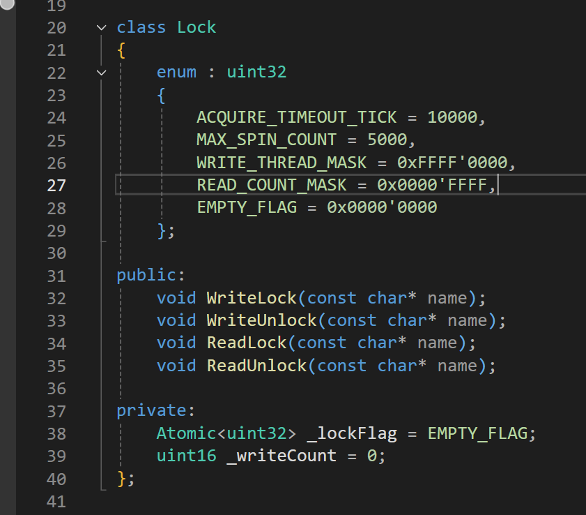
_lockFlag라는 uint32타입의 변수로 비트 플래그 형식으로 락 상태를 관리하도록 하였습니다.
하위 16비트는 읽기에 대한 락 카운트(읽기 쓰레드 수), 상위 16비트는 쓰기 락 소유자의 쓰레드 ID를 넣도록 하였습니다. (쓰레드의 ID는 TLS영역을 사용하였습니다.)
이를 위해 enum으로 비트 마스킹에 필요한 값들을 정의하여 상위 16비트, 하위 16비트에 해당하는 값을 뽑아낼 수 있는 기반 코드를 작성하였습니다.
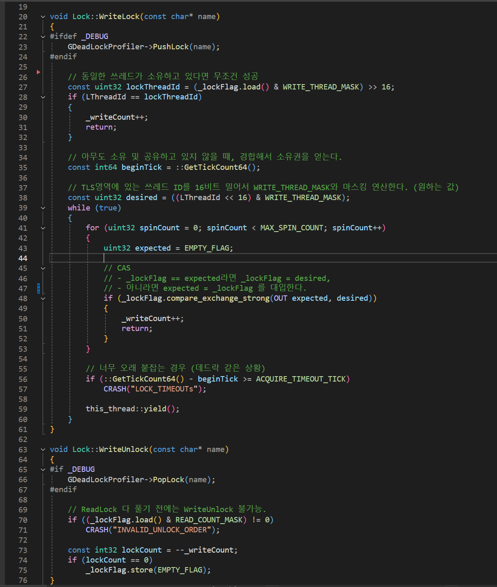
desired값을 현재 LThreadId를 왼쪽으로 16비트를 이동시킨값과 헤더에서 정의한 WriteLock의 ID를 추출할 수 있는 값과 비트 마스킹을 통해 값을 설정하고 CAS연산을 통해 예상한 값(최초에 들어온경우 아무것도 없는 0이라는 값)과 같다면 _lockFlag에 현재 WriteLock을 잡은 쓰레드의 ID를 상위 16비트에 할당하고 _writeCount를 1증가 시키는 식으로 로직을 구현하였습니다.
또한 while문을 제가 지정한 MAX_SPIN_COUNT만큼 잠시 반복하도록 놔두고 시간을 초과하는 경우 스핀락 타임아웃이라는 로그로 크래쉬를 내도록 하였습니다.
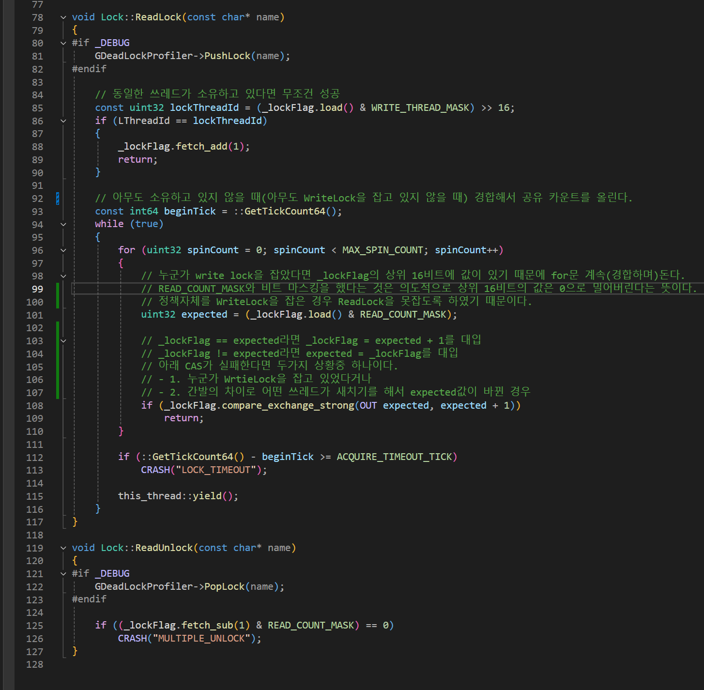
쓰기에 대해 락을 잡은 쓰레드가 ReadLock을 잡는 경우 정책에 맞기 때문에 ReaderLock을 아무 문제 없이 획득할 수 있게 하고 어떤 쓰레드도 ReadLock을 소유하고 있지 않은경우 경합하여 공유 카운트를 늘릴 수 있도록 하였습니다.
compare_exchange_strong(CAS) 연산을 통해 조건에 맞는 경우에만 원자적으로 읽기 카운트를 1씩 증가시켰습니다.
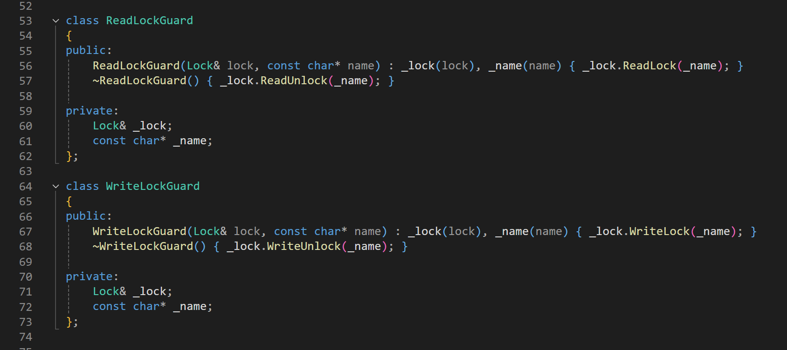
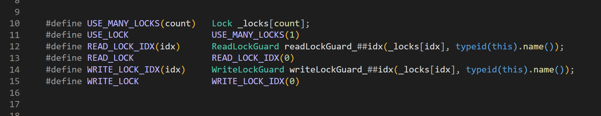
위에서 정의한 Reader/Writer Lock을 편리하게 관리할 수 있게도와주는 ReaderLockGuard, WriterLockGuard를 정의하였습니다.
RAII패턴을 통해 ReadLockGuard를 생성함과 동시에 _lock.ReadLock을 호출하여 ReadLock을 획득할 수 있도록 하였습니다.
name은 typeid를 통해 런타임에 클래스 타입의 이름을 추출하였습니다.
구현결과
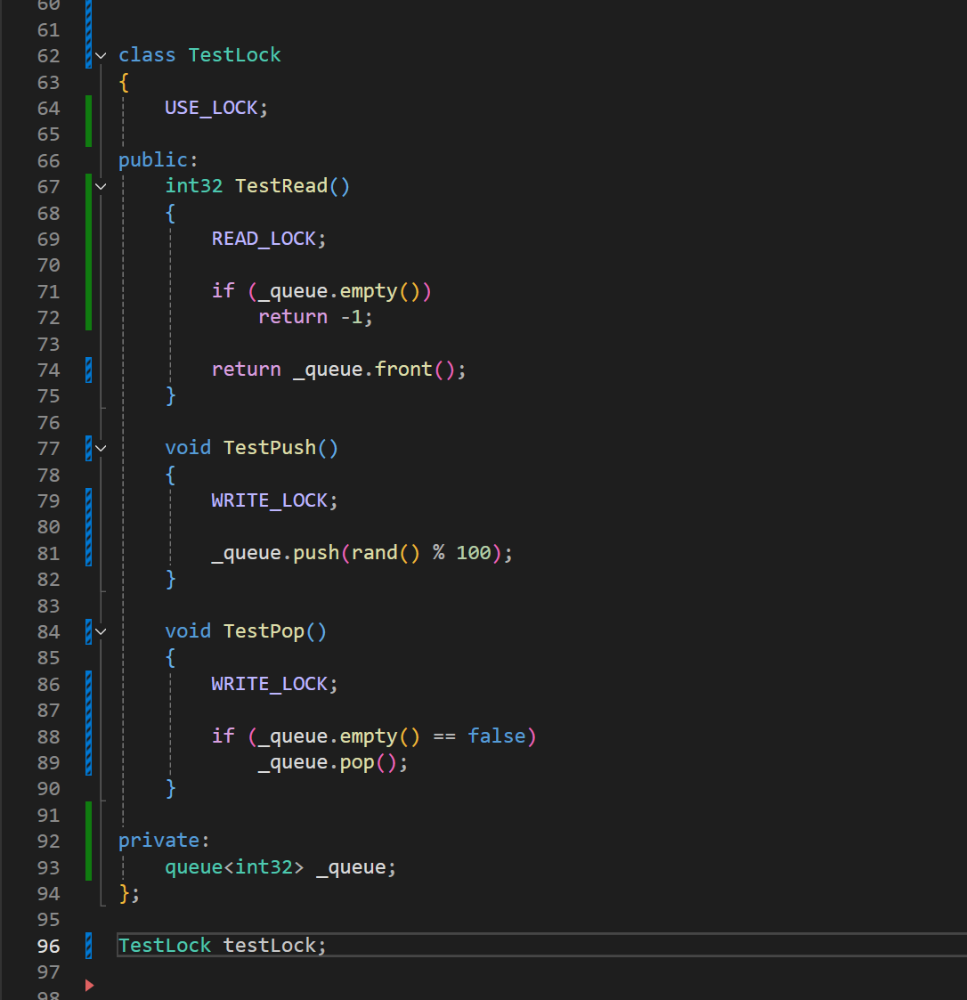
TestLock 클래스를 정의하고 객체를 전역으로 생성하여 테스트 준비를 할 코드를 작성하였습니다.
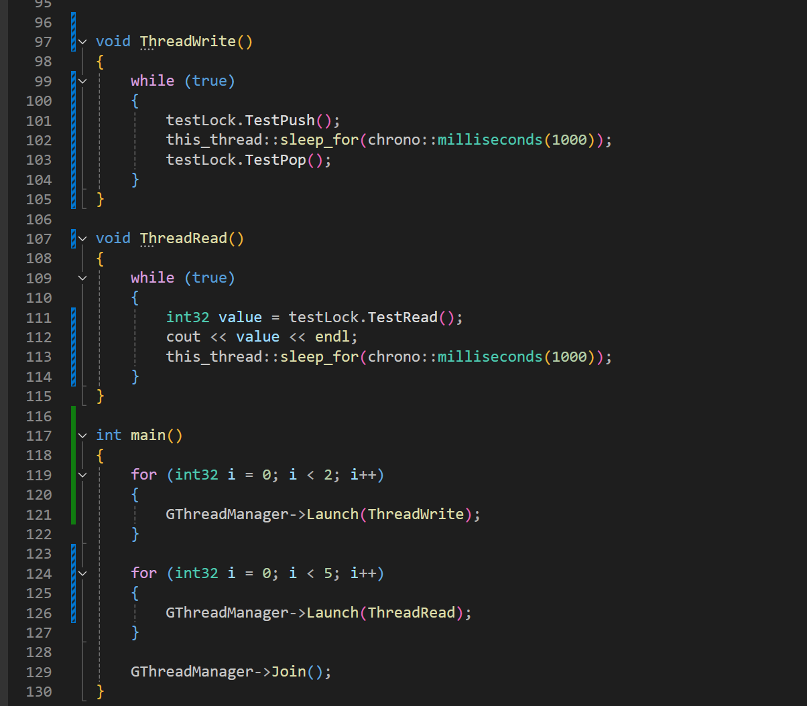
메인쓰레드는 2개의 Write할 쓰레드를 생성하고 ThreadWrite라는 함수를 실행할 수 있도록 하고 5개의 쓰레드는 ThreadRead함수를 실행할 수 있도록 하는 코드입니다.
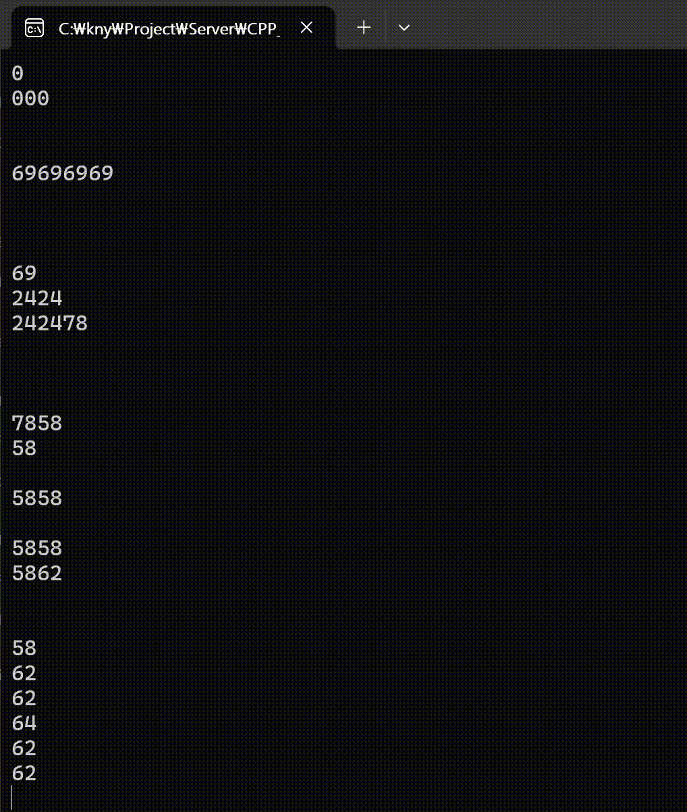
구현결과는 위처럼 정상동작을 하는것을 확인하였습니다.
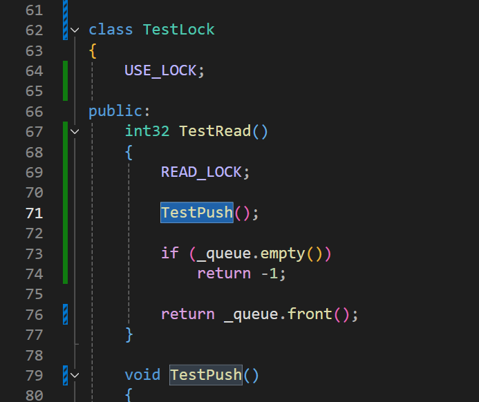
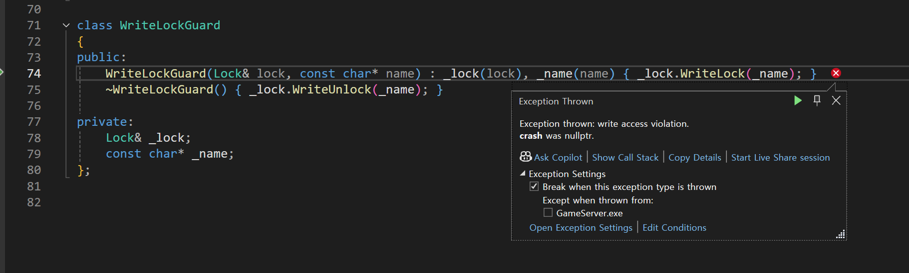
제가 정한 정책에 맞지 않게 ReadLock을 잡은 상황에서 TestPush함수를 호출하여 WriteLock을 잡는 경우 Crash가 나는 것도 확인할 수 있었습니다.
DeadLock Profiler
그래프로 Lock을 획득하는 상황을 표현하고 dfs알고리즘으로 노드간 사이클이 발생여부를 디버그 모드에서 빠르게 탐지할 수 있는 Profiler 기능을 구현하였습니다.
>
시퀀스 다이어그램 표현
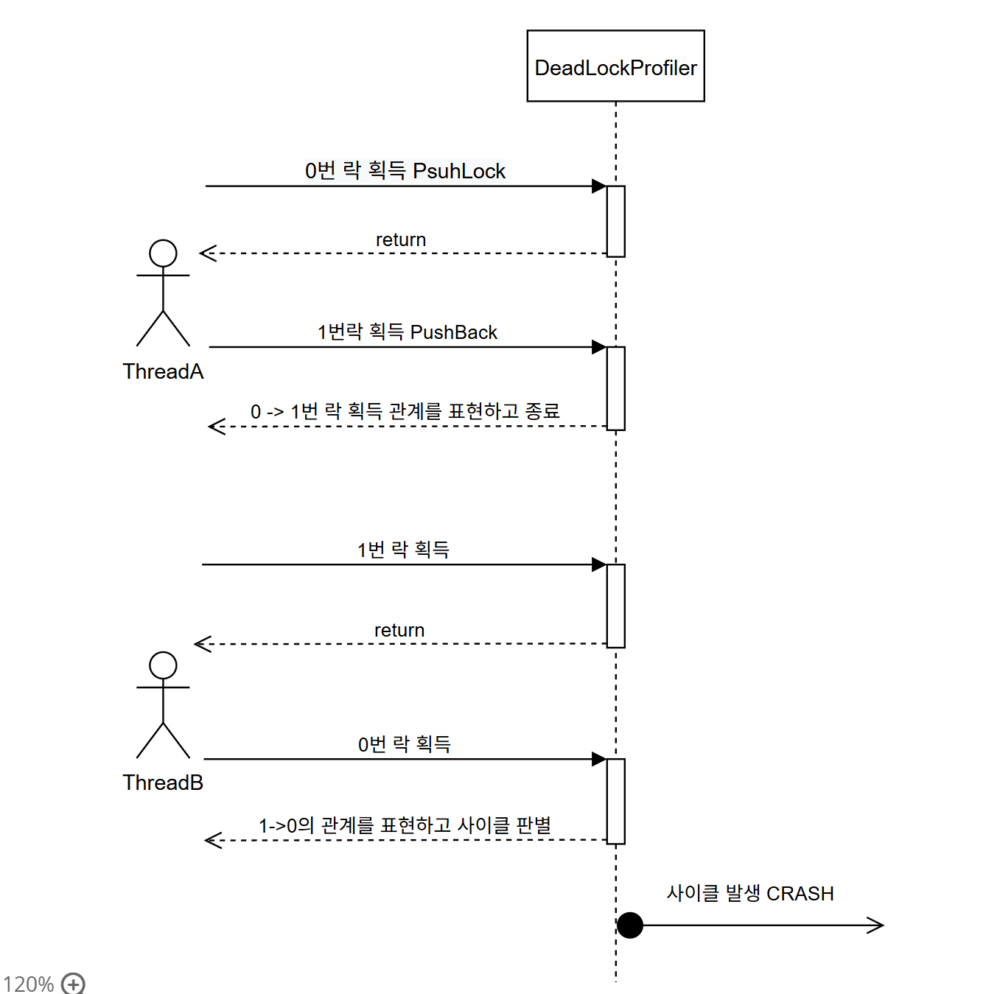
ThreadA, ThreadB 두개의 쓰레드를 준비해서 테스트하였습니다. 각 쓰레드들은 TLS영역에 있는 std::stack을 활용하여 방문한 락의 번호를 활용하게 하였습니다.
ThreadA는 최초에 0이라는 락 ID를 TLS영역에 넣고 해당함수를 종료합니다. 다시 두번째 락을 획득할 때 TLS영역의 스택의 top의 값과 현재 락 ID(1번)가 다르다는 점을 통해 사이클 판별을 수행합니다. 사이클이 발생하지 않기때문에 DeadLockProfiler객체가 들고 있는 _lockHistory에 0 →1 의 관계를 표현하고 종료합니다.
ThreadB의 경우 최초에 락을 획득하는 경우 락ID(1번) TLS영역에는 아무것도 없기때문에 그대로 종료하고 두번째로 0번에 해당하는 락을 회득할때 다시 TLS영역의 스택의 top()값과 다르다는 점을 통해 사이클 판별을 합니다. 1 → 0으로가는 노드 관계를 표현해주고 0, 1번 순으로 DFS알고리즘을 수행합니다.
DeadLockProfiler의 _lockHistory에는 0→1의 관계와 1→0의 관계가 있으므로 DFS알고리즘을 수행하며 방문순서를 기록하여 사이클 판별을 하였습니다.
Code
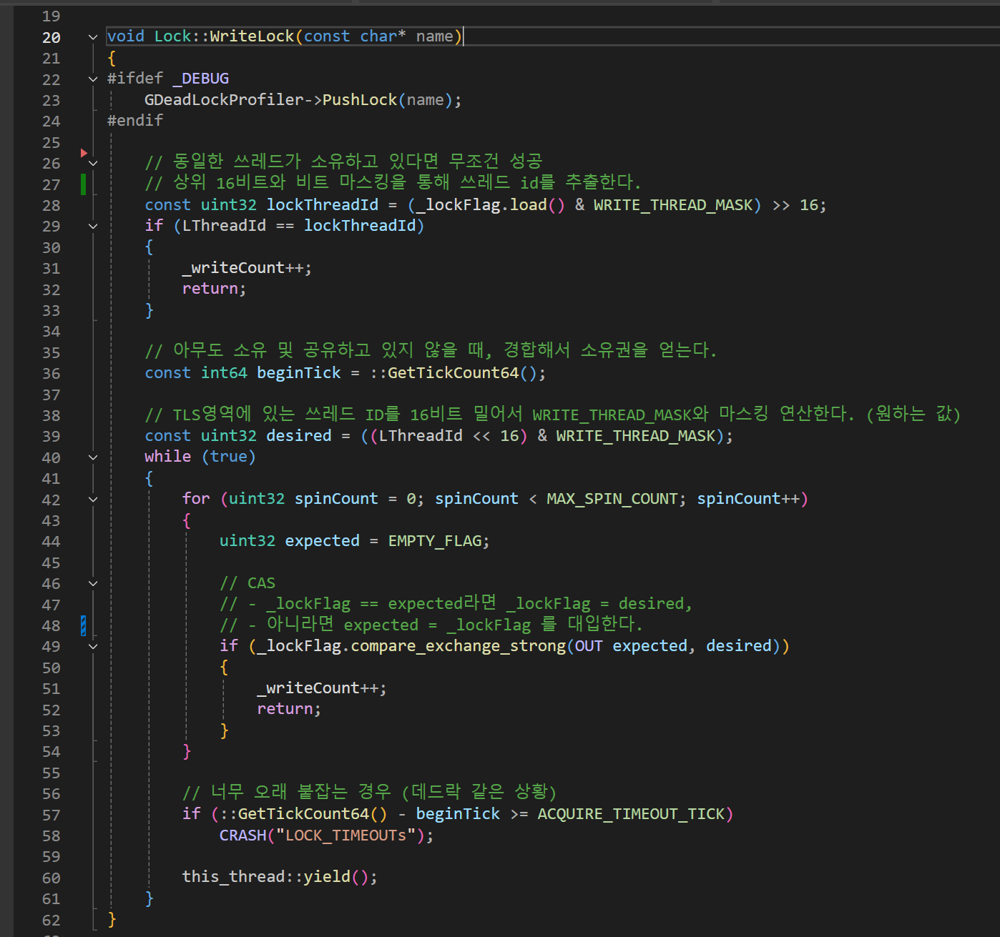
커스텀 Reader/Writer Lock을 RAII패턴으로 생성해서 사용할 때 전처기리문(_DEBUG)으로 DeadLockProfiler의 PushLock함수가 동작할 수 있도록 하였습니다.
Reader/Writer Lock을 사용하는 것 자체가 락을 획득하는 과정인데 DeadLock을 추적하기 위하여 한번더 락을 획득하는 과정이 이상하다고 판다하여 디버그 모드에서만 동작할 수 있도록 하였습니다.
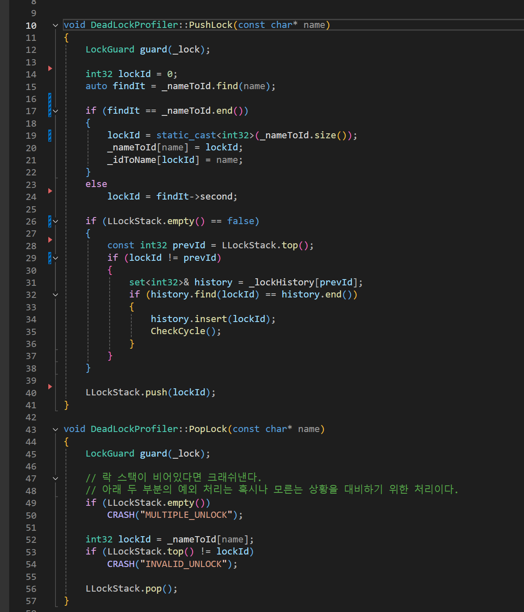
DeadLock 판정을 하기 위한 함수입니다. PushLock의 경우 std::mutex락을 잡아 한번에 하나의 쓰레드만의 접근을 허용하게 하였습니다.
_nameToId라는 ‘unordered_map
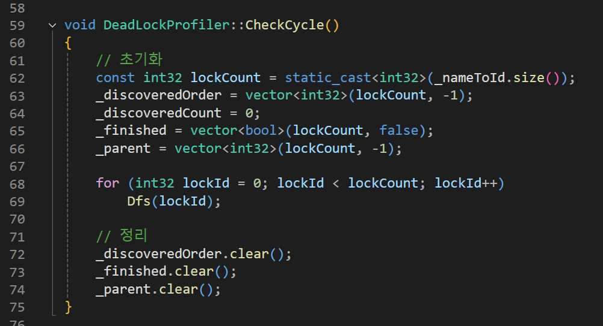
TLS영역의 stack의 top의 값과 다른경우 호출하는 함수입니다. 0→1의 락을 획득한 관계를 표현한경우에는 Dfs함수를 호출하더라도 사이클이 발생하지 않기때문에 그대로 종료합니다.
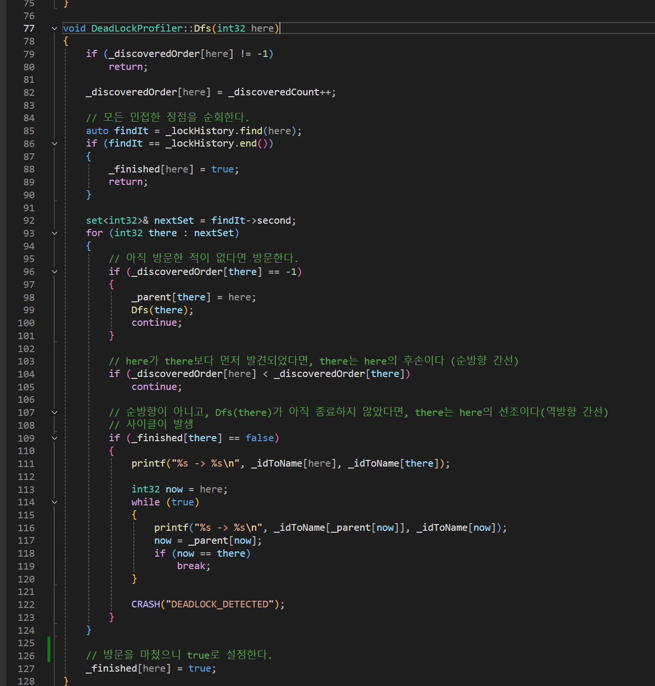
_discoveredOrder를 통해 방문순서를 기록해두도록 하였습니다. ThreadA가 0 → 1의 락 획득 관계를 _lockHistory에 기록하고 ThreadB가 1→0의 락 획득 관계를 _lockHistory에 기록한뒤 위의 Dfs함수를 호출하게 된 경우 _discoveredOrder[1] = 0, _discoveredOrder[0] = 1로 순서를 기록하고 먼현재 방문한 노드의 번호(here)의 값이 이전 방문 값보다 큰 경우 양방향 간선이라 판단하고 사이클이 발새한 것이라 간주하고 이를 콘솔창에 출력하며 CRASH메크로로 빠르게 사이클을 탐지할 수 있게 하였습니다.
Google Protobuf 활용 및 코드 자동화(Python Jinja2활용) 툴
패킷을 구글 프로토버프를 활용하여 직렬화하고 Python Jinja2라이브러리를 통해 코드 자동화 툴을 제작하였습니다.
라이브러리는 구글 깃허브에서 다운로드 후 CMake를 통해 Debug, Release모드에 해당하는 라이브러리들을 빌드하여 사용하였습니다.
또한 패킷별로 구분해서 관리하기 위해 .proto 파일들을 .h파일처럼 구분하여 사용하였습니다.
>
Protobuf 빌드 자동화
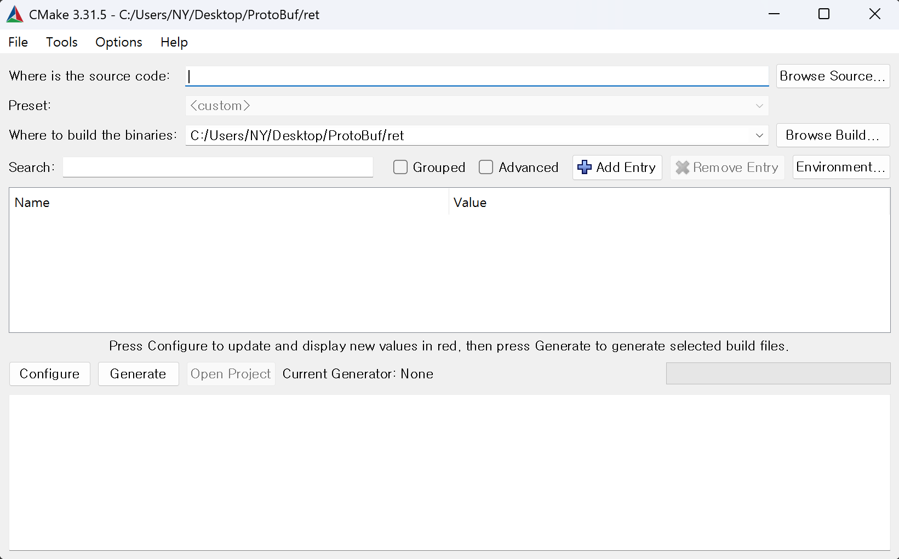
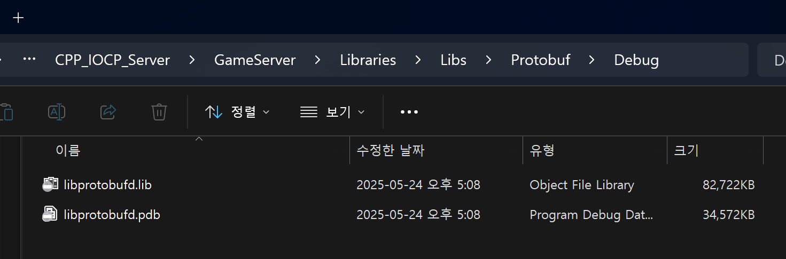
CMake를 통해 Google Protobuf를 빌드하여 얻은 라이브러리 파일들 입니다. debug, release모드로 각각 빌드하였습니다.
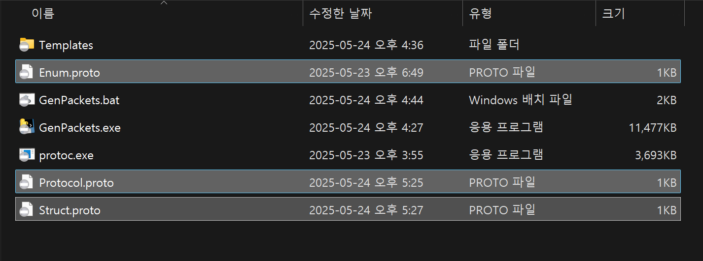
프로토버프를 통해 패킷을 정의한 파일들 입니다.
Protocol.proto파일은 Enum.proto, Struct.proto파일을 참조하여 패킷의 형태를 정의하도록 하였습니다.
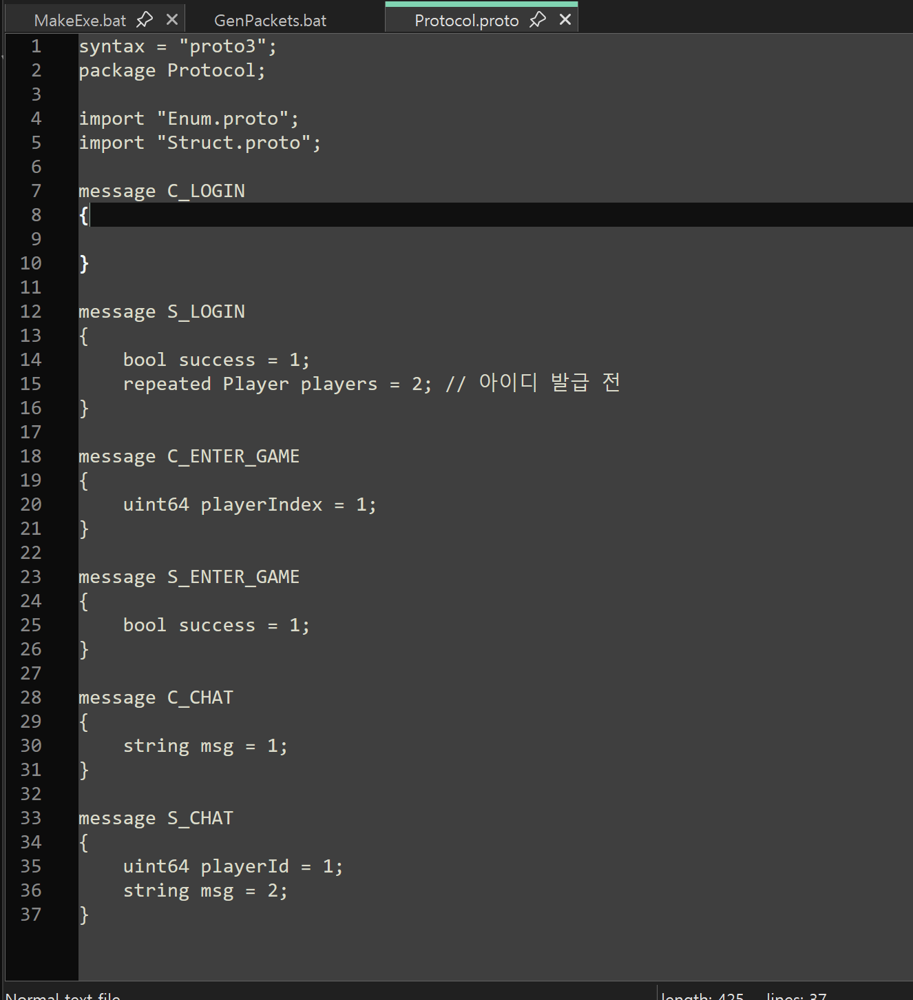
Protocol.proto의 실제 패킷 정의부 입니다. 위처럼 정의한 proto파일을 protoc.exe를 실행하여 빌드하였습니다.
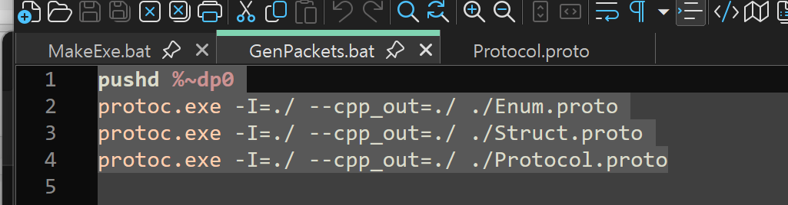
- GenPacket.bat이라는 배치파일을 생성하고 위와 같이 명령어를 만들어 배치파일을 실행하면 protoc.exe를 통해 자동으로 Enum.proto, Struct.proto, Protocol.proto파일들을 빌드 작업을 수행할 수 있도록 하였습니다.
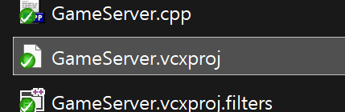
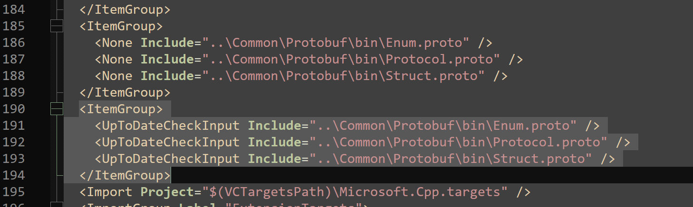
- .proto파일을 수정하고 프로젝트 빌드시 프로젝트에서 .proto에대한 변경사항을 감지하지 못하여 GenPacket.bat을 실행하지 못하는 문제가 있어 프로젝트 설정 파일에서 ‘UpToDateCheckInput’ 키워드를 통해 .proto파일들도 프로젝트에서 감시 대상이 될 수 있도록 하였고 .proto파일들을 수정하더라도 변경사항을 감지하여 빌드시 빌드이벤트에 걸려있는 명령어들이 수행될 수 있도록 하였습니다.
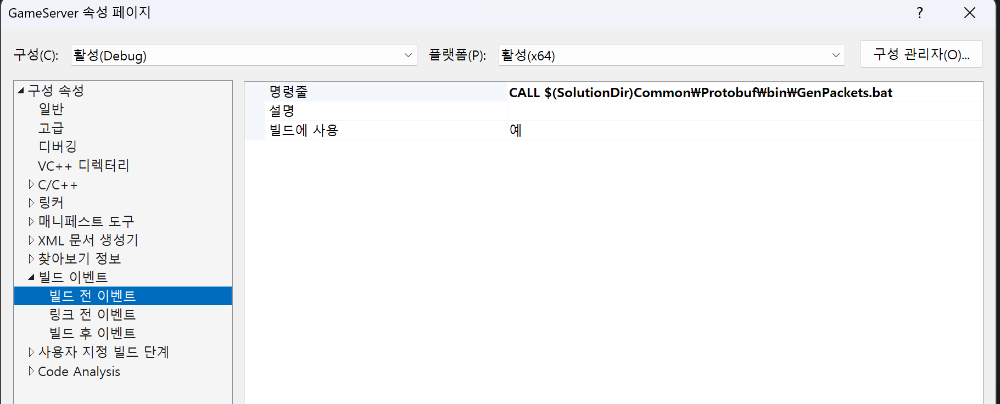
- 추가적으로 매번 배치파일을 실행해야하는 불편함 때문에 빌드 이벤트를 걸어 두어 빌드시 자동으로 GenPacket.bat가 실행될 수 있도록 하였습니다.
Jinja2 라이브러리를 통한 코드 자동화 툴
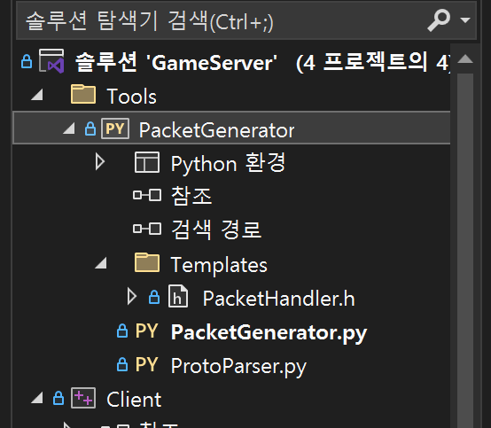
- 솔루션 내에 파이썬 프로젝트를 생성해주고 코드 자동화에 사용할 ‘틀’이 되는 PacketHandler.h를 정의하였습니다. 이 PacketHandler.h내에 Jinja2문법을 사용하여 코드를 자동화 할 수 있도록 하였습니다.
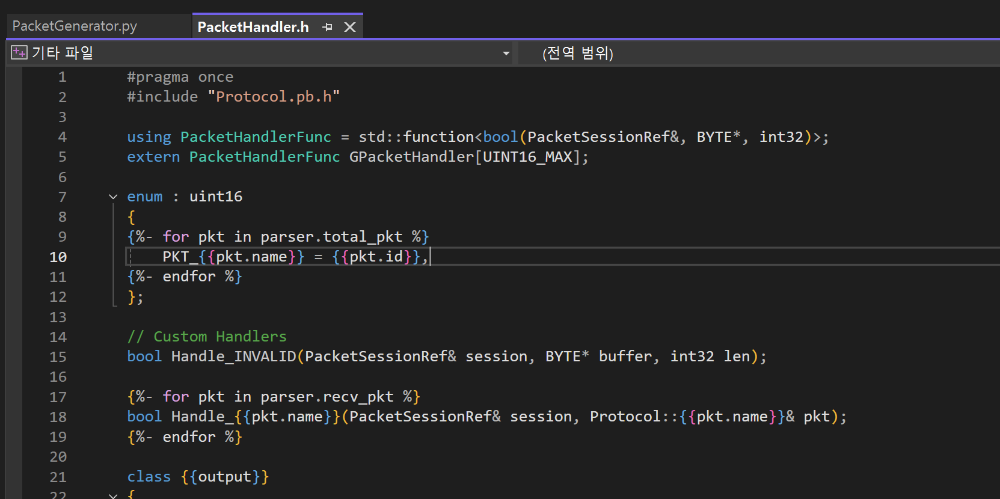
- 실제 PacketHandler.h 코드입니다. Jinja2문법을 통해 자동으로 만들 코드부분에 대해 처리를 하고 만든 파일을 복사하여 아래와 같은 결과를 도출하였습니다.
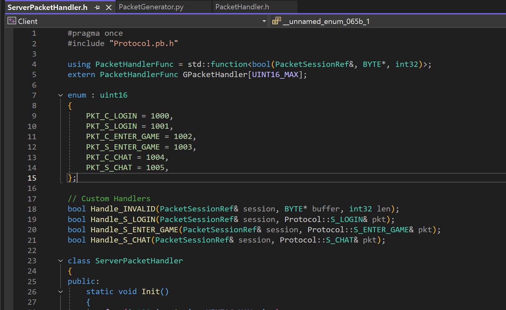
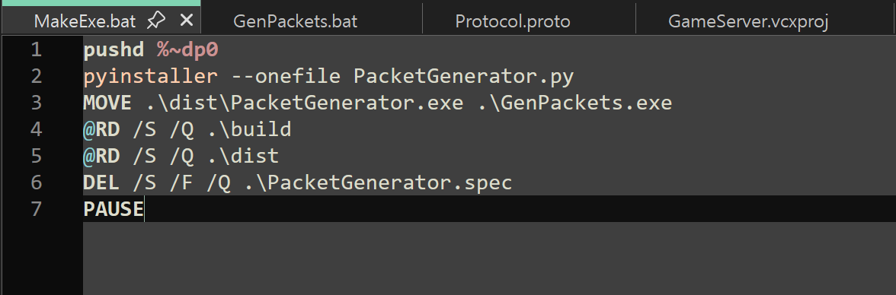
- 파이썬 프로젝트를 매번 실행해야지만 코드가 자동으로 만들어질 수 있는 번거러움 때문에 파이썬 프로젝트를 pyinstaller라이브러리를 통해 .exe 파일로 만들수 있도록 MakeExe.bat이라는 배치파일을 만들어서 사용하였습니다.(이름을 GenPackets.exe로 변경하여 사용하였습니다)
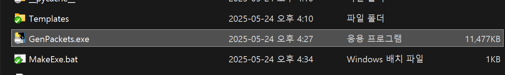
- 배치 파일을 통해 생성된 exe파일입니다.
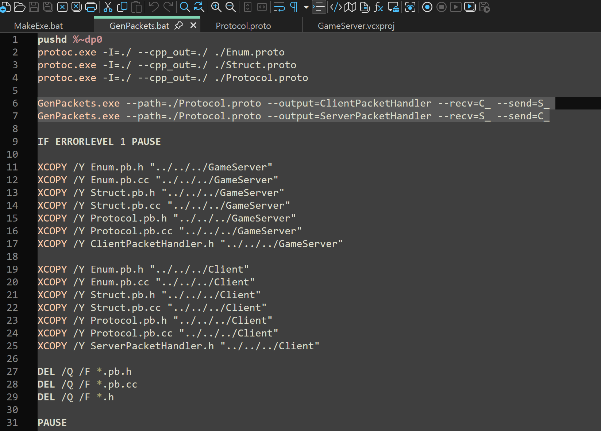
- 6~7번줄 : .proto파일들을 자동으로 빌드를 해주던 배치파일에 GenPackets.exe를 실행하여 ClientPacketHandler.h, ServerPacketHandler.h라는 헤더파일을 만들 수 있도록 하였고 해당파일을 알맞은 경로에 옮기는 작업도 배치파일을 통해 수행할 수 있도록 유도하였습니다.
정리
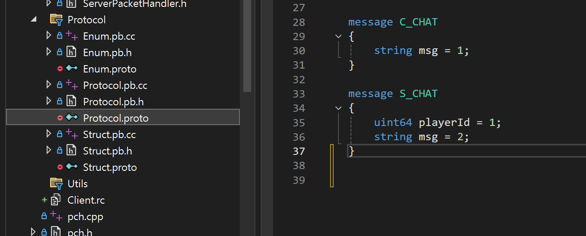
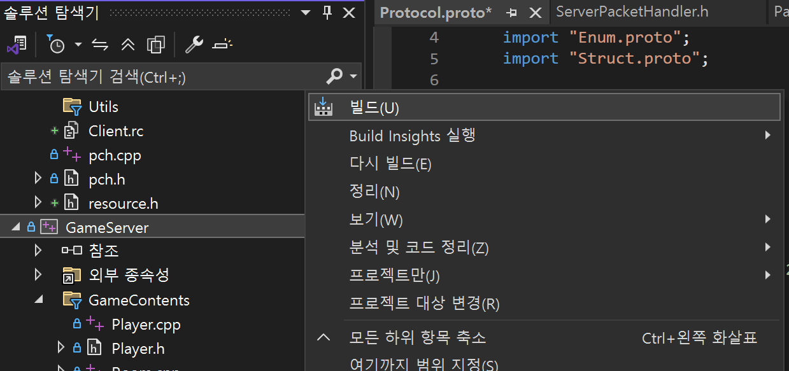
최종적으로 Protocol.proto에 원하는 패킷을 정의하고 프로젝트를 빌드만 하여도 .proto에 변경사항을 감지하고 빌드 이벤트 명령어 실행 → 배치파일 명령어들을 실행하여 protoc를 통해 .proto파일들을 자동으로 빌드하고 서버에 컨텐츠로 활용하고 편하게 사용하기 위한 코드들을 자동화하여 만들 수 있도록 하였습니다.
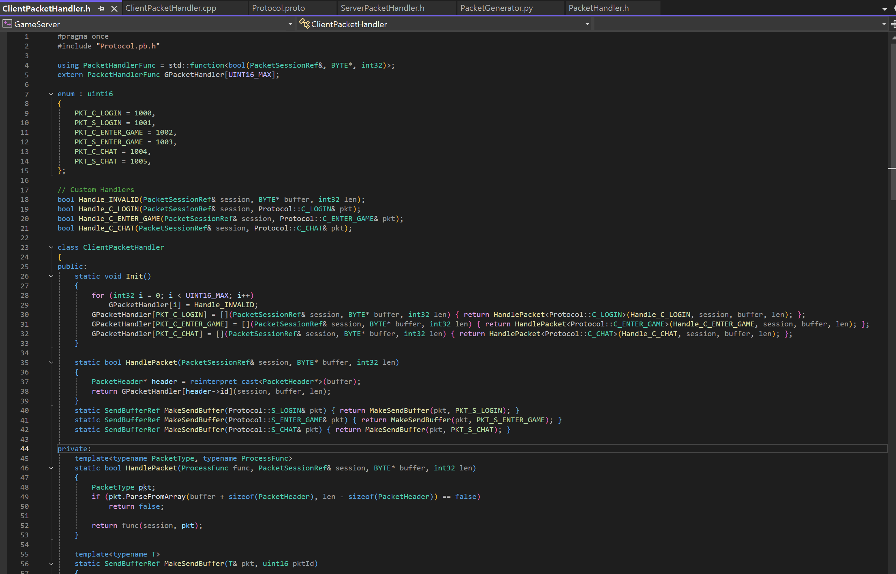
jinja2를 통해 자동으로 생성된 header파일 입니다.